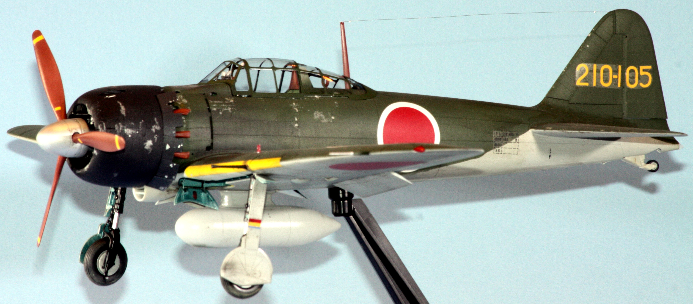
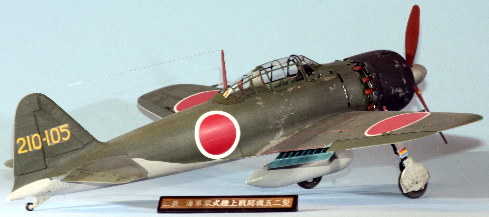
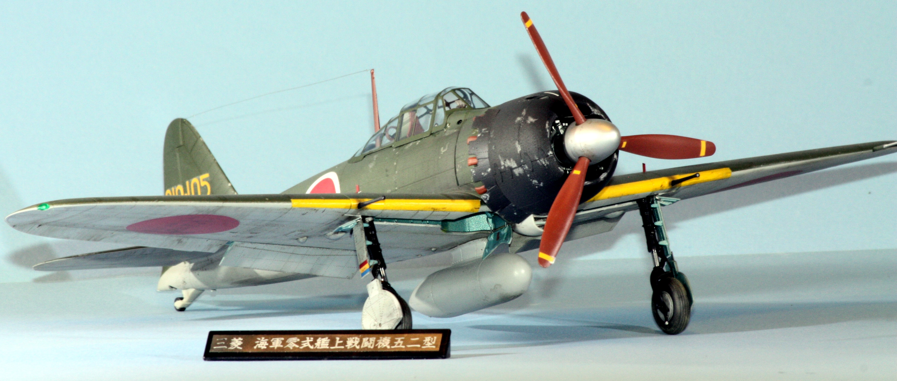

| Kit | Mitsubishi A6M5 Zero Fighter | ||
|---|---|---|---|
| Manufacturer | Tamiya | Scale | 1/32 |
| Kit Number | 52 | Price | $75 |
| Subject Modeled | 210th Fighter Group Meiji Base, Aichi Prefecture 1944 - 1945 | ||
| Start Date | 12 January 2018 | ||
| Complete Date | 11 March 2018 | ||
The first time I read about this kit's existence, I was enamored with the thought of building it. The way it was described was that it included spring-loaded landing gear struts and a few other working features. As it turns out, the kit did include all of those features. The large scale Tamiya kits tend to be pricey, so I spent a bunch of time researching online sellers from around the world for the best price I could find. I was working at Sterling Chemicals in Texas City at the time, so it was a nice surprise to find that big box on my front porch after making that 2-hour drive home to Katy from Texas City. The kit sat in my stash for many, many years until I finally decided to build it at the start of 2018. While I was working on it, my dad passed away. That event took a lot of my enthusiam away for doing anything, including modeling. After about a month, I returned to my workbench and was able to finish this thing.
  